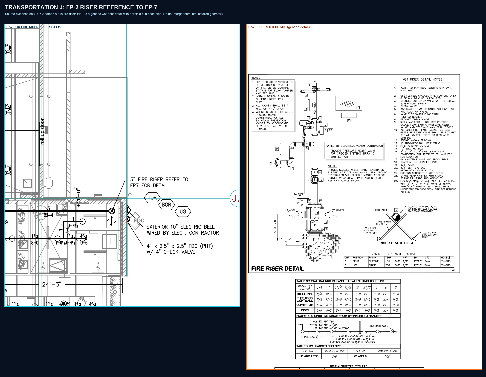

Transportation J - FP-2 to FP-7 riser reference
The plan calls out a 3 in fire riser and points to FP-7. FP-7 is retained beside it as source evidence, with its generic 4 in base-pipe detail visibly distinct. This is a cross-sheet reference, not installed riser geometry.
FP-2 reference retainedFP-7 detail retainedInstalled geometry and drains held
